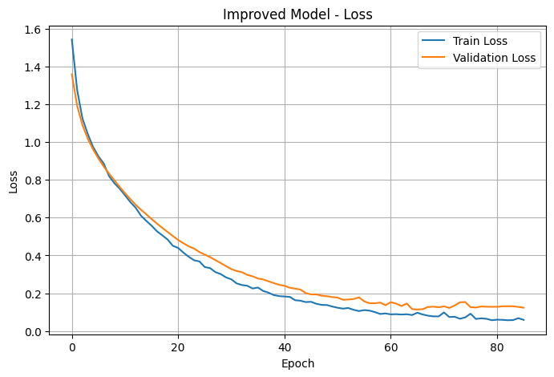
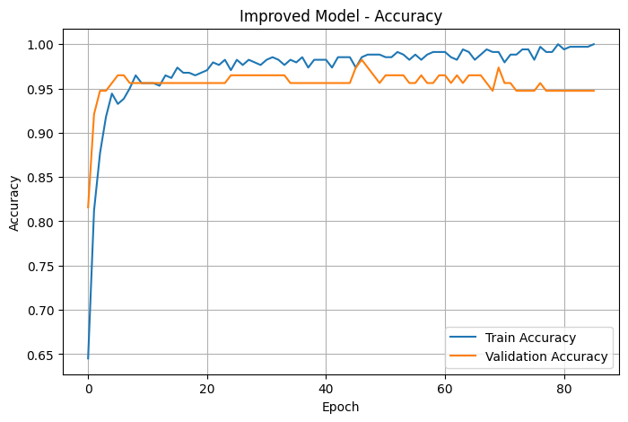

CH 01 고도화란 무엇을 끌어올리는 일인가#
모델을 "고도화한다"고 하면 보통 층을 더 쌓고 손실 숫자를 더 낮추는 일로 떠올린다. 하지만 검증 단계를 거친 뒤의 고도화는 그보다 한 칸 위의 질문에서 시작한다. 지금 모델이 무엇에서 약한가 — 학습 데이터엔 잘 맞는데 검증·테스트에서 무너지는가(과적합), 아니면 둘 다 못 맞히는가(과소적합). 검증 잣대가 가리키는 약점이 다르면 처방도 달라진다.
오늘 다루는 도구는 네 갈래다. L2 정규화·weight decay는 가중치가 너무 커지지 않게 눌러 모델이 특정 특성에 과하게 기대는 것을 막는다. Batch Normalization은 각 미니배치의 출력을 정규화해 학습을 안정·가속한다. Dropout은 학습 중 일부 뉴런을 무작위로 꺼서 특정 경로에 의존하지 않게 한다. 그리고 콜백(EarlyStopping·ReduceLROnPlateau)은 학습 과정을 감시하며 멈추거나 학습률을 조절한다. 넷 모두 일반화를 위한 장치지, 학습 손실을 더 낮추는 장치가 아니다.
규제와 정규화를 잔뜩 더하면 테스트 손실이 더 낮아지고 정확도도 오를 것이다 — 라고 기대하기 쉽다. 정말 그런가? 손실과 정확도가 같은 방향으로 움직인다는 보장이 있나? 코드로 두 모델을 돌려 보면 답이 나온다.
CH 02 기본 모델 — 단순 MLP의 기준선#
먼저 전체 데이터를 학습 60% · 검증 20% · 테스트 20%로 나눴다. stratify=y로 클래스 비율을 보존해 한쪽으로 치우치지 않게 했고, StandardScaler는 학습 데이터로만 fit한 뒤 검증·테스트에 그 기준을 그대로 적용했다 — 테스트가 학습 통계를 엿보지 않게 하는 기본기다.
기본 모델은 군더더기 없는 Dense(16, relu) → Dense(1, sigmoid) 2층 MLP다. Adam(lr=0.001) + binary_crossentropy로 100 에폭을 돌렸다. 이게 "더 보태기 전"의 출발선이다.

기본 모델의 곡선은 train·val 손실이 함께 매끈하게 내려가다 꼬리에서 평평해진다. 단순한 만큼 학습이 빠르고 과적합 신호도 약하다. 30개 특성에 569개 샘플이라는 작고 깔끔한 데이터라서, 단순한 모델만으로도 이미 꽤 잘 맞춘다. 고도화의 출발점은 "기본이 충분히 잘하는데 굳이 왜?"라는 의심이기도 하다.
CH 03 고도화 모델 — 규제·BatchNorm·Dropout을 쌓다#
고도화 모델은 폭을 키우고(64 → 32) 각 Dense 뒤에 정규화 장치를 붙였다. 핵심은 순서다. Dense(L2 규제) → BatchNormalization → ReLU → Dropout으로 묶었다. BatchNorm을 활성화 함수 앞에 두고, Dropout을 맨 뒤에 둔다.
def build_improved_model(input_dim):
model = keras.Sequential([
layers.Input(shape=(input_dim,)),
layers.Dense(64, kernel_regularizer=regularizers.l2(0.01)),
layers.BatchNormalization(),
layers.Activation("relu"),
layers.Dropout(0.3),
layers.Dense(32, kernel_regularizer=regularizers.l2(0.01)),
layers.BatchNormalization(),
layers.Activation("relu"),
layers.Dropout(0.2),
layers.Dense(1, activation="sigmoid"),
])
model.compile(
optimizer=keras.optimizers.Adam(learning_rate=0.001),
loss="binary_crossentropy",
metrics=["accuracy"],
)
return modelKeras 쪽은 L2 규제(l2(0.01))로 가중치를 누르고, 같은 실습의 PyTorch 버전에서는 옵티마이저 자체에 weight decay가 녹아 있는 AdamW(weight_decay=0.01)로 같은 목적을 달성한다. 둘은 "가중치를 작게 유지한다"는 같은 처방의 두 구현이다.
BatchNorm과 Dropout의 순서·위치는 취향이 아니라 동작에 영향을 준다. BatchNorm은 활성화 직전에 배치 통계로 정규화하고, Dropout은 그 뒤에서 뉴런을 끈다. 둘을 거꾸로 두거나 Dropout 비율을 너무 높이면, 정규화 통계가 흔들리거나 정보가 과하게 잘려 오히려 학습이 불안정해진다. 여기선 깊은 층에 0.3, 얕은 층에 0.2로 차등을 뒀다.
CH 04 AdamW와 콜백 — 학습을 지키는 장치#
고도화 학습에는 에폭을 200까지 늘리되, 끝까지 다 돌리지 않도록 두 콜백을 붙였다. EarlyStopping(monitor="val_loss", patience=20, restore_best_weights=True)는 검증 손실이 20 에폭 동안 나아지지 않으면 멈추고, 그중 가장 좋았던 가중치로 되돌린다. ReduceLROnPlateau(factor=0.5, patience=5, min_lr=1e-6)는 검증 손실이 5 에폭 정체되면 학습률을 절반으로 줄인다 — 최저점 근처에서 보폭을 좁혀 미세 조정하게 만든다.
early_stopping = keras.callbacks.EarlyStopping(
monitor="val_loss", patience=20, restore_best_weights=True)
reduce_lr = keras.callbacks.ReduceLROnPlateau(
monitor="val_loss", factor=0.5, patience=5, min_lr=1e-6)
improved_history = improved_model.fit(
X_train_scaled, y_train,
validation_data=(X_val_scaled, y_val),
epochs=200, batch_size=32,
callbacks=[early_stopping, reduce_lr], verbose=1)실제 학습 로그를 보면 후반부 학습률이 1.2500e-04까지 내려가 있고, train 정확도가 1.0에 닿는 동안 val 손실은 0.12 언저리에서 더 내려가지 않는다. 즉 학습 데이터는 거의 외웠지만 검증에서는 한계선에 닿았다는 뜻 — 콜백이 바로 이 지점을 감시한다.

콜백은 "언제까지 학습할지"를 사람이 손으로 정하지 않게 해 준다. 에폭을 넉넉히 200으로 열어 두고, 멈추는 시점과 학습률 감소는 검증 손실에게 맡긴다. 특히 restore_best_weights=True가 핵심이다 — 멈춘 순간의 가중치가 아니라, 학습 중 검증 손실이 가장 낮았던 순간의 가중치를 챙긴다. 더 오래 돌리는 게 아니라, 가장 좋았던 지점을 놓치지 않는 게 콜백의 일이다.
CH 05 결과 비교 — 정확도는 올랐는데 손실은 왜 올랐나#
같은 테스트셋(114개)으로 두 모델을 평가했다. 손실·정확도·혼동행렬을 함께 찍었다.
기본 모델 테스트 손실: 0.1048 기본 모델 테스트 정확도: 0.9561 고도화 모델 테스트 손실: 0.1551 고도화 모델 테스트 정확도: 0.9649 기본 모델 혼동행렬 [[40 2] [ 3 69]] 고도화 모델 혼동행렬 [[41 1] [ 3 69]]
가설이 절반만 맞았다. 정확도는 0.9561 → 0.9649로 소폭 올랐다. 혼동행렬을 보면 악성(malignant) 42건 중 양성으로 잘못 분류한 위양성이 2건에서 1건으로 줄었다 — 첫 행이 [40 2]에서 [41 1]로 바뀐 부분이다. 그런데 테스트 손실은 오히려 0.1048 → 0.1551로 올랐다.
"정확도↑인데 손실↑"는 모순이 아니다. 정확도는 0.5 임계값을 넘었느냐만 보는 계단 함수라 맞으면 그만이다. 반면 binary crossentropy 손실은 확신의 정도까지 본다. 규제와 Dropout이 모델의 과신을 눌러서, 맞히긴 맞히되 확률을 0.99가 아니라 0.85처럼 덜 단정적으로 내놓는다. 맞은 예측의 확신이 낮아지면 정확도는 그대로여도 손실은 올라간다. 한 숫자만 보면 "고도화가 실패했다"고 오판하기 딱 좋다.
분류 리포트에서도 같은 흐름이 보인다. 고도화 모델은 malignant의 recall이 0.95 → 0.98로 올랐다 — 놓치면 안 되는 암 케이스를 더 잘 잡아낸 것이다. 의료 분류에서 위양성 1건의 감소와 recall 상승은 손실 0.05의 증가보다 훨씬 의미 있는 개선일 수 있다.
CH 06 고도화의 정체 — 손실 한 줄이 아니다#
오늘의 실습이 알려 준 건, 고도화의 목표가 "테스트 손실 한 줄을 낮추는 일"이 아니라는 점이다. L2·BatchNorm·Dropout·AdamW·콜백은 모두 모델이 학습 데이터를 외우는 대신 덜 단정하게, 더 안정적으로 일반화하도록 만드는 장치다. 그 대가로 손실 숫자는 오히려 커질 수 있고, 그게 곧 실패는 아니다.
여기서 검증의 역할이 다시 분명해진다. 손실·정확도·혼동행렬·precision·recall을 함께 깔아 두지 않았다면, 손실 0.10 → 0.16만 보고 고도화를 되돌렸을 것이다. 검증 잣대를 여러 개 펼쳐 두었기에 "손실은 올랐지만 위양성이 줄고 recall이 올랐다"는 진짜 변화가 보였다.
고도화는 모델을 키우는 일이라기보다, 문제와 지표를 다시 정의하는 일에 가깝다. "무엇이 좋아져야 하나"를 먼저 정하고(여기선 악성 케이스를 놓치지 않는 것), 그 잣대 위에서 규제·정규화·콜백을 골라 더한다. 작은 데이터에서는 단순 모델이 이미 강하므로, 고도화의 이득은 손실 숫자가 아니라 일반화 안정성과 특정 지표(recall·위양성)에서 나타난다. 데이터 특성이 모델과 처방을 정한다 — 정답 레시피는 없다.
📚 근거 출처
- 실습 코드 —
from_colab_deep_learning/0619-s(ai_model_performance_optimization) - 강의 PDF — AI모델_고도화
- 공식 문서 — Keras Callbacks(EarlyStopping·ReduceLROnPlateau)